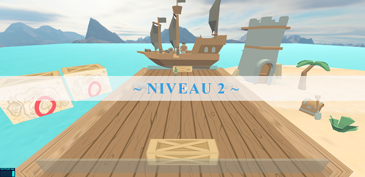
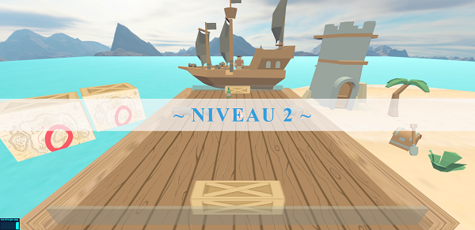
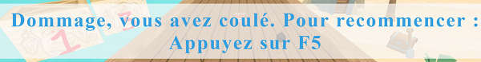
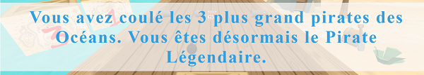
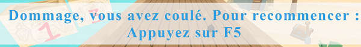
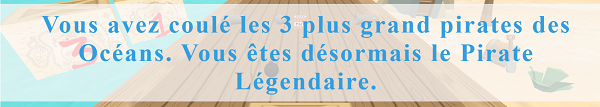
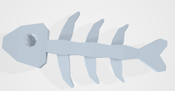
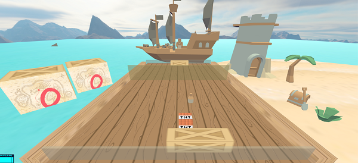
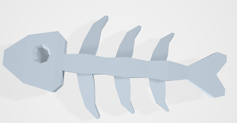
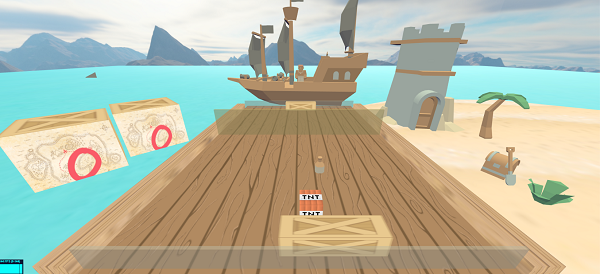

Pirate Pong
Le projet de SIA consiste à développer une variante 3D du jeu PONG, inspirée du jeu Cubeslam.
J'ai décidé de réaliser ce pong sous le thème des Pirates.
La scène se situe sur un océan avec deux bateaux et des pirates qui se battent pour un trésor à l'aide de TNT.
Déroulement du jeu
But du jeu
Le jeu, entre un joueur principal que l'on dirige et un adversaire, consiste à renvoyer une balle à l'aide de raquettes.
Les joueurs sont représentés par des bateaux, l'adversaire est modélisé par un pirate et la balle par une TNT.
Les raquettes sont matérialisées par des caisses en bois.
Le but étant d'envoyer la TNT 3 fois dans le bateau adverse pour le détruire.
Pour marquer un point il faut d'abord abaisser le bouclier adverse en le touchant.
On peut voir le score qui flotte sur des caisses à la gauche du joueur.
Concernant la physique des rebonds, nous utilisons la technologie des Raycaster.
La balle rebondit sur les pads des joueurs, les boucliers, les murs et certains éléments ajoutés à partir du niveau 2.
Nous expliquerons plus en détail comment fonctionne les collisions dans la partie "Gestion Des Collisions". La manière dont nous avons géré les collisions permet de facilement ajouter ou enlever un objet qui serait en colission avec la balle.
Un joueur marque un point lorsque la balle arrive à une certaine distance z (ou -z) du terrain.
Lorsqu'un jouer marque un point, on réinitialise la balle au centre (la vitesse de la balle dont nous parlerons plus tard), les boucliers des joueurs et on incrémente son score.
Si l'adversaire marque 3 points le jeu est terminé et un dialogue apparaît pour relancer une partie.
Si le Joueur marque 3 points, alors il passe au niveau suivant avec une animation (le bateau adverse et le pirate coule), un dialogue le félicite d'avoir détruit le bateau et introduit le prochain niveau.
Il existe 3 niveaux différents avec une difficulté croissante, nous présenterons les niveaux dans la partie "Graphisme"
 

Technologies Logicielles
- WebGL
- THREE.js (+dépendances)
- THREEx (extension de Three.js)
Fenêtre graphique 3D
But du jeu
La fenêtre de jeu possède certaines caractéristiques.
Pour cela nous avons ajouté des listener sur la fenêtre.
Peu importe la façon dont elle est redimensionnée le jeu reste jouable.
Il est possible de passer la fenêtre en plein écran en appuyant sur la touche "F".
En appuyant sur "P", on obtient une capture d'écran.
Graphisme
Environnement
La scène 3D entre dans un ciel (skybox). Cet environnement simule une ambiance au milieu de l'océan.
Nous avons ajouté l'eau pour avoir l'impression que chaque objet se situe dans l'eau (les scores et les bateaux qui flottent).
Il existe 3 représentations différentes de l'adversaire. Chaque pirate représente un niveau (de gauche à droite du plus faible au plus fort)
Chaque Pirate est sur un bateau qui se détruit et coule lorsque le Joueur le détruit (en marquant 3 points).
Nous tenons à souligner les graphismes, les décors, les modèles et les textures choisis. Le but était de créer un environnement cohérent et beau visuellement. Une fois le jeu lancé nous sommes transportés dans une ambiance pirate au milieu de l'océan à se battre contre des pirates. La vue du joueur est fait de façon à bien voir les scores, avoir un environnement simple pas trop chargé mais qui permet de rentrer totalemnt dans le jeu.
Pour l'ambiance nous avons ajouté une île avec quelques décorations rappelant l'ère de la piraterie. Il y a aussi la musique dont nous reparlerons dans la partie "Musique et sons" qui est le thème du film Pirate des Caraïbes.
On peut voir un requin se balader dans l'eau derrière la scène de combat.
A partir du niveau 2, des canons entrent en jeu, la balle peut entrer en collisions avec eux, mais attention les canons tirent des boulets qui eux aussi peuvent entrer en collision avec la balle !
Dialogues avec l'utilisateur
Caméra et transitions
La touche "H" permet, à n'importe quel moment du jeu, au joueur de voir tous les raccourcis du jeu, comment se déplacer, les boutons liés à la fenêtre, les boutons de triche... Elle indique aussi ce que font les Jokers.
Chaque niveau est introduit par un dialogue.
Lorsque l'adversaire marque 3 points, le jeu se termine et l'indique à l'utilisateur.
Lorsque le joueur marque 3 points il y a une transition avant l'affichage du niveau suivant qui félicite le joueur.
Enfin, il existe un dialogue pour les plus grands pirates qui réussissent à vaincre le niveau 3.
 



Points de vue caméra
Deux caméras proposées
Il existe deux points de vue différents :
Le premier en appuyant sur "0" on obtient la vue de base du jeu.
Le second en appuyant sur "1", le joueur se retrouve à la place du pad et suit le moindre de ses mouvements.
Gestion des collisions
Ce procédé fonctionne de la manière suivante : on prend notre objet "balle" qui est un cube, on trace 8 vecteurs tout autour de la balle (pour que les vecteurs entourent la balle dans une scène 3D).
On créé ensuite un tableau "collisionGroup[]" et on lui insère tous les objets de la scène avec lesquels on souhaite que la balle entre en collision. On utilise un tableau différent avec les jokers "jokerGroup[]" car on ne veut pas que la balle rebondisse dessus mais qu'ils disparaîssent et active leur effet au contact avec eux.
On calcule ensuite la distance entre un objet avec lequel on souhaite une collision et les vecteurs de la balle. Si la distance est égale à certains nombre on simule une collision (l'idée est de choisir une distance avec laquelle le rebond est le plus réaliste possible.
Il suffit alors de décider en fonction du vecteur la direction que devra prendre la balle.
Nous avons aussi pris en considération le fait que si la balle touche un certains endroit d'un pad elle par dans une certaine direction.
Grâce à notre façon de gérer les collisions il est très simple pour nous d'ajouter ou retirer un objet dans la scène qui subira oui ou non des collisions avec la balle.
Concernant les Jokers, lorsque un vecteur de la balle entre en contact avec un Joker, le Joker disparaît et appelle la fonction du Joker correspondant pour qu'il active son effet.
Dynamique
Balle
La vitesse de la balle augmente au cours des échanges et des niveaux. Chaque rebond augmente la vitesse de la balle jusqu'à une vitesse maximale pour permettre le jeu toujours jouable pour un humain.
Comme nous avons vu précédemment la balle rebondit sur les objets que l'on souhaite. Lorsque la balle entre en collision avec une des raquette, nous verifions l'endroit où la balle frappe pour diriger son rebond. En effet, si la balle frappe le centre de la raquette, la balle s'en ira tout droit, si elle frappe légèrement sur la gauche de la raquette elle partira légèrement à droite ou gauche en fonction de la provenance et si elle frappe sur le bout de la raquette elle rebondira fortement sur les côtés.
Raquettes
Lorsque le joueur va vers la droite sa vitesse augmente exponentiellement. Cette vitesse se réinitialise lorsqu'il touche le mur de droite ou qu'il parte vers la gauche. Ceci est vrai aussi pour la gauche. Ces paramètres sont facilement modifiables.
Jokers
Mécanisme
Comme nous l'avons expliqué dans la gestion des collisions, les jokers sont dans un tableau qui permet à la balle d'entrer en contact avec eux. Lorsque la balle entre en contact avec un Joker, elle fait disparaître sont modèle et active son effet.
Un joker apparaît toutes les 5 secondes sur le terrain et disparaît au bout de 10 secondes si aucun des joueurs ne l'a touché avec la balle.
Tous les jokers ont été pensé pour entrer dans le thème des pirates, ils sont tous modéliser par un model 3D.
Les différents Jokers
Il existe 4 Jokers différents dans le Pirate Pong (et 1 bonus pour survivre au Corona)
La Bouteille de Rhum
Le rhum permet au joueur qui touche le joker de récupérer son bouclier. Il est bien connu que les pirates survivent grâce au rhum !
L'épée Pirate
L'épée est un bonnus offensif, il permet d'attaquer l'ennemi et détruire son bouclier
La Bombe
La bombe est votre meilleur élément pour gagner une partie, elle explose la raquette de l'adversaire et la réduit de taille pendant quelques secondes.
Bonus : Le Corona sous la forme d'un poisson
Le poisson est un poisson malade, ayant mangé du pangolin il est infincté par le covid-19. Vous devez absolument éviter ce joker qui apparaît que de votre côté du terrain. Il vous met en confinement jusqu'à que vous attrapez la Chloroquine.
Bonus : La Chloroquine sous la forme d'un rhum ambré
La chloroquine n'apparaît que lorsque vous êtes en confinement, si vous arrivez à l'attrapez vous relevez ce mur qui représente le confinement.
La photo suivante montre un joueur qui a mangé un poisson contaminé, il est actuellement en confinement.

 



Intelligence artificielle de l'adversaire
IA
L'intelligence Artificielle de l'adverse est créé autour de sa vitesse de déplacement. L'IA est en continu entrain de suivre la balle, sa vitesse est plus ou moins rapide en fonction des niveaux.
L'adversaire devient très coriaces au niveau 3, l'utilsation des Joker est presque indispensable pour vaincre ce pirate.
Musique et sons
Musique Générale
La musique de fond est évidemment celle de Pirate des Caraïbes, elle permet au joueur de se sentir dans une ambiance explosive et de vouloir se battre jusqu'à la mort contre les pirates.
La technologie utilisée est l'audioListener proposée par Three.js
On lance le son du jeu lorsque le joueur pénètre dans l'arène de combat (Au niveau 1). Si la musique se termine elle se répète (il est presque impossible qu'elle se termine de part sa durée).
Son Rebonds
A chaque rebond un son de rebond apparaît. Ce son est plutot doux et permet de contraster avec l'explosivité de la musique générale.
Triche
Il existe 4 boutons de triche
Si l'utilisateur appuie sur :
K: détruit le bouclier de l'adversaire
i: fait apparaître un bouclier doré de votre côté du terrain qui est incassable
J: fais apparaître le prochain joker
N: permet de passer au niveau suivant
Les petits plus
Les graphismes
Chaque objet ou model est accompagné d'une texture détailée et cohérente avec le thème et l'environnement.
La skybox et l'eau permettent une impression de flottaison dans le jeu, les scores et les bateaux sont dans l'eau.
Chaque pirate est différent et propose une tenue adéquate à sont niveau, le niveau 1 est un simple marin d'eau douce alors que le niveau 3 est un capitaine pirate.
Les pirates sur les bateaux simule une bataille navale.
La balle sous forme de TNT permet une cohérence dans le jeu, il faut envoyer la TNT dans le bateau adverse pour le détruire.
L'île et ses objets permettent d'habiller la scène et renforce l'immersion.
La physique
La balle rebondit bien entre chaque obstacles et la vitesse est progressive.
Les raquettes sont fluides et leur accélération ne suprend pas.
Les canons ajoutés à partir du niveau 2 augmente la difficulté et entre parfaitement dans la scène du jeu. Les rebonds répondent parfaitement sur ces nouveaux modèles.
Les jokers sont présent assez souvent pour être drôles et ne pas ruiner le jeu. Le corona est très fun, le joueur veut absolument l'éviter.
Les animations
Il existe plusieurs animations pour rendre le jeu immersif.
Un requin se balade derrière la scène. Il dissuade les pirates de tomber à l'eau !
Lorsque le jour détruit un bateau, celui-ci coule accompagné de son pirate. Un capitaine ne quitte jamais son navire et coule avec lui.